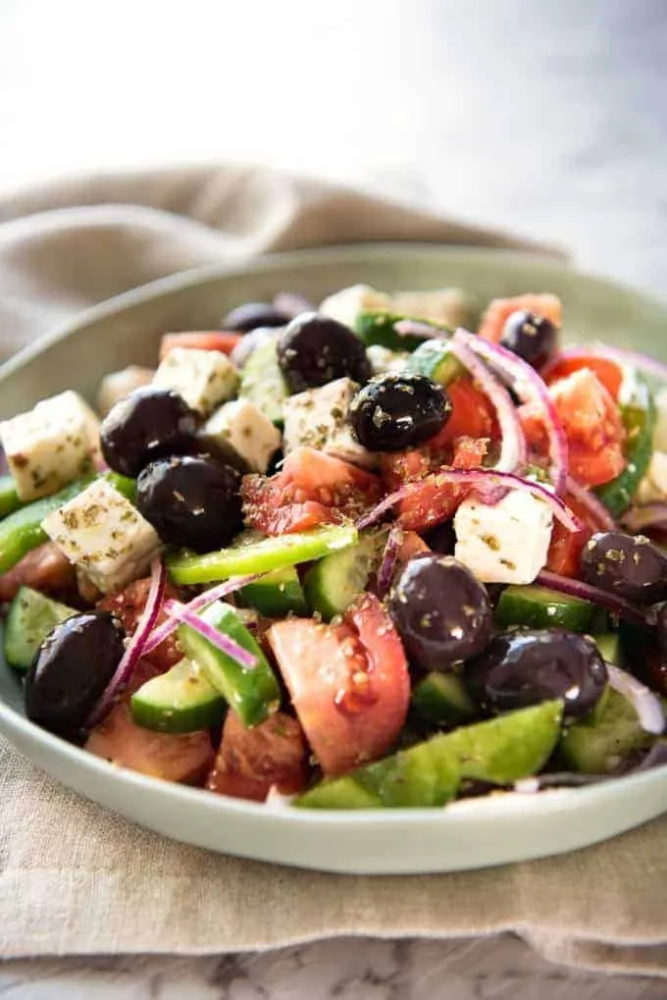

Greek Salad Recipe
Description
Tasty Greek Salad Highlights Tomato, Feta and Olives.
Ingredients
- Cucumber
- Cherry Tomato
- Lettuce
- Feta Cheese
- Red Onion
- Olive Oil
- Oregano
Steps
- Dice Cucumer into Small Quarters
- Slice Cherry Tomatoes in Half
- Cut Red Onion in Half and Slice
- Dice Feta Cheese into Small Cubes
- Chop Lettuce
- Combine these Ingredients into a Large Bowl
- Add Olives, Olive Oil and Oregano
- Mix Well and Serve